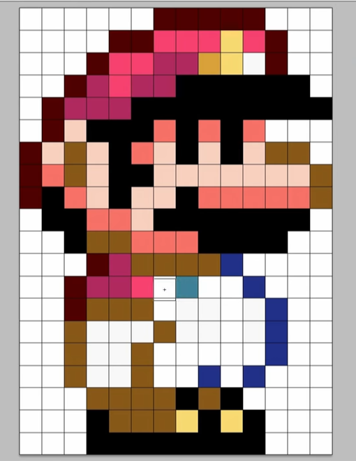

在油管看到一个视频教你用14x20的方格画出「超级马里奥世界」中的马里奥的形象，想到终端中的字符也可以当成是一个一个的方块，通过控制字符的背景色应该也可以画出马里奥，甚至能让它动起来。

字符化 手动控制14x20的区域字符颜色的显示太费时间不现实，我的想法是先写一个程序把马里奥的形象字符化后录入到代码中，组成马里奥身体的每个字符都映射不同颜色，通过ANSI转义字符来控制输出背景色，循环渲染所有帧实现动画效果。
一般终端都支持24位真彩色，在终端中执行printf "\033[38;2;255;0;0mTrue Color\033[0m\n"，会打印红色字符True Color ，38表示前景色，改成48可以修改背景色，后面的255;0;0指定颜色为红色，它的格式是${red};${green};${blue}。马里奥是由一个个的像素块组成的，通过控制背景色输出空格就能表示一个像素块了，所以第一步是得到组成它的所有像素位置以及像素颜色。
在这里 找到了「世界版」的角色图，那就先读取图像解析像素吧。定位到要读取的子图的起始坐标以及子图的宽高，chars是用来字符化角色用的字符序列，由于马里奥角色的配色比较少，这些字符够用了。
1 2 3 4 5 6 7 8 9 10 11 12 13 14 15 16 17 18 19 20 21 22 23 24 25 26 27 var ( width = 28 height = 24 chars = ".abcdefghijklmnopqrstuvwxyz0123456789ABCDEFGHIJKLMNOPQRSTUVWXYZ" characters = map [string ]int { "mario" : 30 , "luigi" : 661 , "toad" : 1291 , "toadette" : 1921 , } actions = map [string ]int { "idle" : 3 , "up" : 40 , "crouch" : 77 , "walk" : 149 , "run" : 217 , "accelerate" : 250 , "skid" : 287 , "jump" : 324 , "fall" : 357 , "fly" : 394 , "front" : 497 , "left" : 530 , "back" : 563 , } )
读取图像后用png.Decode解码图像得到image.Image，对所有需要字符化的子图调用下面的pixel2Char方法，定位到子图的起始坐标点，循环遍历子图像素点得到RGB颜色值，得到的RGB颜色是32位的转成8位再格式化成R;G;B，选取一个未使用的字符代替这个像素点，为了显示好看把宽度拉长一倍，用两个字符表示一个像素，并把RGB值和这个字符建立映射关系。
1 2 3 4 5 6 7 8 9 10 11 12 13 14 15 16 17 18 19 20 21 22 23 24 25 26 27 28 29 30 31 32 33 34 35 36 type color struct { chars []byte index int mapping map [string ]byte } func (c *color) char (rgb string ) byte if b, ok := c.mapping[rgb]; ok { return b } if c.index >= len (c.chars) { return chars[0 ] } c.mapping[rgb] = c.chars[c.index] c.index++ return c.mapping[rgb] } func pixel2Char (img image.Image, point image.Point, color *color) []string chars := make ([]string , height) for y := 0 ; y < height; y++ { line := make ([]byte , width*2 ) for x := 0 ; x < width; x++ { r, g, b, _ := img.At(x+point.X, y+point.Y).RGBA() rgb := fmt.Sprintf("%d;%d;%d" , r>>8 , g>>8 , b>>8 ) char := color.char(rgb) line[2 *x] = char line[2 *x+1 ] = char } chars[y] = string (line) } return chars }
得到了马里奥的像素的坐标和调色板，可以选择用json序列化到文件，但我不想每次都启动都要读取一遍json文件，所以我选择直接拼接生成go代码。最终生成的代码部分如下。
1 2 3 4 5 6 7 8 9 10 11 12 13 14 15 16 17 18 19 20 21 22 23 24 25 26 27 28 29 30 31 32 33 34 35 36 37 38 39 40 41 42 43 var ( palettes = map [byte ]string { '.' : ";;" , '0' : "141;3;89" , '1' : "255;99;174" , '2' : "232;202;255" , '3' : "235;16;106" , '4' : "255;163;71" , '5' : "255;204;255" , } ASCII = map [string ][]string { "mario.run" : { "........................................................" , "........................................................" , "........................................................" , "..........................aaaaaaaaaa...................." , "......................aaaabbbbbbccbbaa.................." , "....................aabbbbddddeeccffaa.................." , "..................aaddbbddddgggggggggggg................" , "................aaddddddgggggggggggggggggg.............." , "................aaiigggggghhgghhgghh...................." , "..............aaiijjiigghhiiggiiggiijjjj................" , "..............aahhjjiiggggiiiiiiiiiiiiiijj.............." , "..............aagghhiiggiiiigghhhhhhhhhhjj.............." , "................gggghhhhiigggggggggggggg................" , "............jjjjjjjjjjjjhhhhhhgggggggg.................." , "............jjffffffjjbbjjjjjjjjkk......................" , "..............jjffffjjbbllllllmmmmkk...................." , "..............ggjjddddllllffffmmffffkkgggg.............." , "............ggjjjjllllllllffffmmffffggccgggg............" , "............ggjjjjllllllllllllllmmkkggjjgggg............" , "............ggjjjjkkkkkkllllllllkkggjjgggg.............." , "............ggjjccgg....kkkkkkkk..ggjjgggg.............." , "..............gggg..................gggg................" , "........................................................" , "........................................................" , }, } )
这一部分的完整代码可以在generator 查看。
渲染 渲染就是把字符化的字符转换成带ANSI转义的空格数据输出到终端，下面封装了一些特殊的操作。
1 2 3 4 5 6 7 8 9 10 11 12 13 14 15 16 17 18 19 20 21 22 23 24 25 26 27 28 29 30 31 32 33 34 35 36 func term () (int , int ) width, height, err := terminal.GetSize(int (os.Stdout.Fd())) if width == 0 || height == 0 || err != nil { width, height = 80 , 24 } return width, height } func reset () string return "\033[H" } func escape (rgb, str string ) string return fmt.Sprintf("\033[48;2;%sm%s" , rgb, str) } func prepare () string return "\033[H\033[2J\033[?25l\033[0m" } func cleanup () string return "\033[H\033[2J\033[?25h\033[0m" } func linefeed () string return "\033[m\n" } func title () string return "\033];Super Mario World in terminal\007" }
frame方法根据提供的point初始坐标，把马里奥的数组数据覆盖到背景数组数据的正确位置。这里需要判断边出界的情况，image包提供Rectangle.Intersect方法可以获取两个矩形的相交部分，定位到两个数组的相交部分的数据，把非背景字符覆盖过去。
1 2 3 4 5 6 7 8 9 10 11 12 13 14 15 16 17 18 19 20 21 22 23 24 25 26 27 28 29 30 31 32 33 34 35 36 37 38 39 40 41 42 43 44 45 46 47 48 49 func (r *renderer) frame (background [][]byte , charact []string , point image.Point) [][]byte bgRect := image.Rect(0 , 0 , r.width, r.height). Intersect(image.Rect(point.X, point.Y, point.X+len (charact[0 ]), point.Y+len (charact))) if bgRect.Dx() == 0 || bgRect.Dy() == 0 { return background } fgRect := image.Rect( bgRect.Min.X-point.X, bgRect.Min.Y-point.Y, bgRect.Max.X-point.X, bgRect.Max.Y-point.Y, ) var wg sync.WaitGroup wg.Add(2 ) go func () defer wg.Done() for i := 0 ; i < bgRect.Dy()/2 ; i++ { for j := 0 ; j < bgRect.Dx(); j++ { if charact[fgRect.Min.Y+i][fgRect.Min.X+j] != char { background[bgRect.Min.Y+i][bgRect.Min.X+j] = charact[fgRect.Min.Y+i][fgRect.Min.X+j] } } } }() go func () defer wg.Done() for i := bgRect.Dy() / 2 ; i < bgRect.Dy(); i++ { for j := 0 ; j < bgRect.Dx(); j++ { if charact[fgRect.Min.Y+i][fgRect.Min.X+j] != char { background[bgRect.Min.Y+i][bgRect.Min.X+j] = charact[fgRect.Min.Y+i][fgRect.Min.X+j] } } } }() wg.Wait() return background }
print方法把合成好的二维数组添加上ANSI转义字符后输出到终端，split方法解析每一行字符数据，找出连续相同的字符，作为一个输出单元。
1 2 3 4 5 6 7 8 9 10 11 12 13 14 15 16 17 18 19 20 21 22 23 24 25 26 27 28 func (r *renderer) print (frame [][]byte ) defer r.buffer.Flush() r.buffer.WriteString(reset()) for i := range frame { for _, output := range r.split(frame[i]) { r.buffer.WriteString(output) } if i != len (frame)-1 { r.buffer.WriteString(linefeed()) } } } func (r *renderer) split (s []byte ) []string var ret []string var last int for i := 0 ; i < len (s)-1 ; i++ { if s[i] != s[i+1 ] { ret = append (ret, escape(palettes[s[i]], r.chars[i+1 -last])) last = i + 1 } } ret = append (ret, escape(palettes[s[last]], r.chars[len (s)-last])) return ret }
启动两个goroutine，一个合成字符数组，另一个负责输出到终端，循环处理。
1 2 3 4 5 6 7 8 9 10 11 12 13 14 15 16 17 18 19 20 21 22 23 24 25 26 27 28 29 30 31 32 33 34 35 36 37 38 39 40 func (r *renderer) render (args arguments) var wg sync.WaitGroup wg.Add(2 ) go func () defer wg.Done() i := 0 for { background := r.background() for _, frame := range args.Frames[i] { r.frame(background, ASCII[frame.Name], frame.Point) } select { case r.channel <- background: } i++ if i == len (args.Frames) { i = 0 } } }() go func () defer wg.Done() for { frame, ok := <-r.channel if !ok { return } r.print (frame) time.Sleep(time.Duration(args.Itv) * time.Millisecond) } }() wg.Wait() fmt.Print(cleanup()) }
在终端输入以下命令，让程序跑起来看看效果🍄。
1 ./smwterm -f 8 \"-5,0,mario,accelerate/30,0,luigi,run\" \"-5,0,mario,run/30,0,luigi,accelerate\"
该项目代码可以在GitHub 查看。